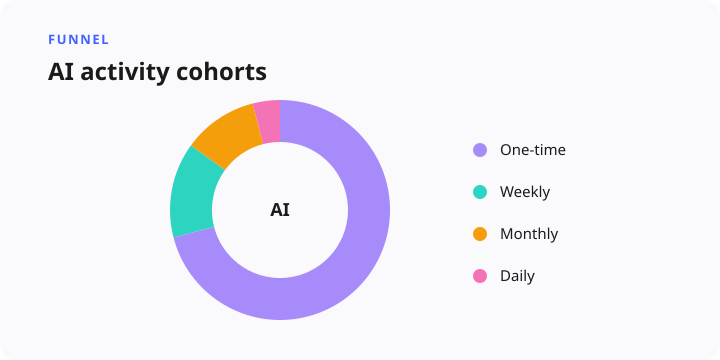

AI Canvas Non-Adopter Profiling
Hundreds of thousands reached, most never adopted
A combined behavioral-funnel and qualitative study that named the real, fixable reasons most AI-enabled users never crossed the adoption line.
Situation
After the internal AI tool launched, the loudest users were adopters. The larger story was everyone else. Canvas AI features sat in front of hundreds of thousands of AI-enabled users, yet adoption stayed low. Most people with AI access never became regular users, and specific workflows in particular struggled to activate or retain. Left alone, product would keep polishing the experience for people who already loved it, while the growth problem sat with users who had access and still never crossed the threshold.
Task
Build a comprehensive non-adoption diagnosis: first quantify the funnel scale using behavioral data to establish a rigorous definition of non-adopters, then explain the qualitative root causes — literacy, mental models, trust, friction — in users' own words, to drive product and enablement changes.
Approach
Phase one was behavioral funnel analytics. Non-adopters were defined as users who had access but never used any AI feature since launch. From that definition I built adoption and retention views — day-one and day-seven return, one-time versus power-user behavior — and split AI-enabled users into mutually exclusive activity cohorts: one-time, returning daily, weekly-only, monthly-only, and churned. Firmographics from plan, role, and organization made the cohorts interpretable, and opt-in recruitment lists turned these exact behavioral segments into clean qualitative research samples, bridging the quantitative funnel directly into research outreach without volunteer bias.
Phase two was qualitative research and deep dives. Using the recruited samples, I conducted in-depth interviews with non-adopters and adjacent users — including heavy external-AI users who underused the internal AI platform. Synthesis focused on literacy, discovery, and trust, and claimed usage was cross-validated against actual feature event logs in the central data warehouse to resolve naming confusion. One recurring finding: current distribution channels — videos, tooltips, organizational emails — had become “white noise,” actively filtered out as low-ROI interruptions, creating a discovery deadlock where users said they didn't have time to learn, yet stayed stuck because they didn't know how the tool applied to their immediate task.

Result
The combined behavioral scale and qualitative narrative made the path forward clear and actionable. Quantifying the full user journey exposed activation drop-offs and low long-term retention across key workflows, establishing a baseline to measure product growth. A perception-versus-reality gap emerged: widespread misalignment between self-reported behavior and telemetry logs revealed real discovery and naming barriers in the core product experience. Passive documentation and generic onboarding turned out to be largely ineffective, driving a shift toward in-context guidance embedded directly in active workflows, and trust concerns around transparency, security, and predictable behavior showed how trust deficits were limiting collaborative and team-level usage. Together, this research re-aligned cross-functional leadership around addressing foundational user barriers, driving strategic investment in trust, contextual activation, and majority user engagement for long-term business impact.
Methodology
Behavioral analytics fused with qualitative interviewing, triangulation of claimed versus actual event data, careful cohort-definition craft, privacy-aware research sampling, and literacy/mental-model research that redefined the enablement strategy.
Skills demonstrated: Qualitative synthesis (diary studies, interviews), Research-ops & infrastructure